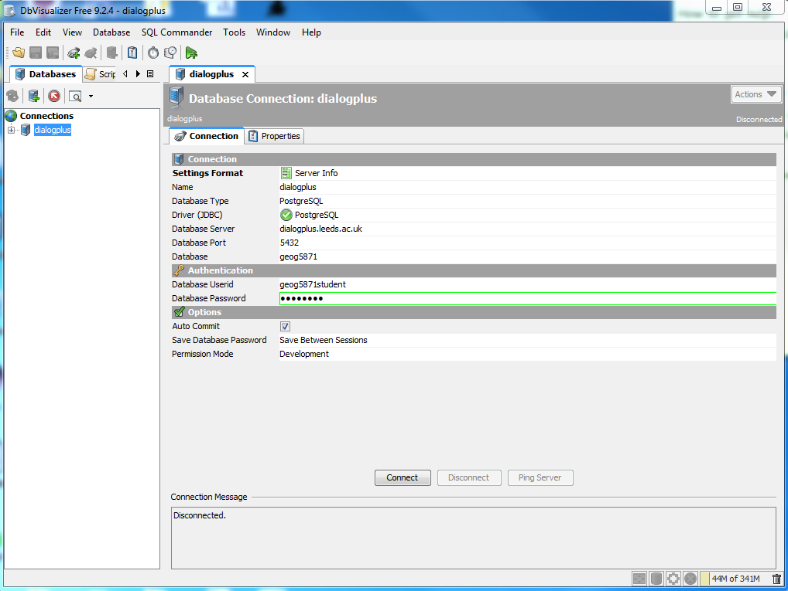
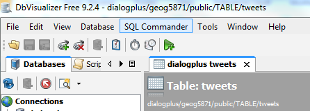

Server Side Technologies
Task 2 - Introduction to PostgreSQL and DbVisualizer
We have created a PostgreSQL database instance named ‘geog5871’ on the dialogplus.leeds.ac.uk remote server.
In this task you will:
- Create a connection to the geog5871 database instance
- Interrogate the existing ‘tweets’ tables using SQL
- Create your own table using additional data-sets
1.0 Interfacing with PostgreSQL using DbVisualizer
If you are using a computer on the University of Leeds network you can connect directly to the PostgreSQL
database instance on the dialogplus.leeds.ac.uk server through DbVisualizer.
DbVisualizer is a free administration and development platform for PostgreSQL.
- Download DbVisualizer here and run the exe file. If you are using a
University owned machine, ensure that the destination directory is set to your M:/drive.
- Connect to the dialogplus.leeds.ac.uk server by clicking the ‘Create new database connection’ button on the
top left hand side of the toolbar, under the 'Databases' tab.
- Use the database connection wizard to create a new connection to the dialogplus.leeds.ac.uk server.
Enter the following credentials including the database username and password:
Database Driver: PostgreSQL
Database Server: dialogplus.leeds.ac.uk
Database Port: 5432
Database: geog5871
Userid: XXX
Password: XXX

DbVisualizer has extensive functionality which makes it easy to query, edit and display data.
You will see an object browser on the left hand side of the window, showing the various database
connections (you should see the geog5871 connection here)
- Expand the geog5871 connection and view the different subdirectories enclosed within.
- Find the ‘tweets’ table located in public > TABLE and explore the data, by right clikcing and selecting
'open in new tab'. You should see a number of tabs appear at the top of the page, including: data, columns, info etc.
How many columns are there? How many rows are there? Which column is the primary key?
3.0 Querying the Data
- Click on the green arrow icon on the top toolbar to open a new 'SQL Commander'.
This query builder allows you to query the data using Structured Query Language (SQL).
There is also the option to use pgSQL; spatially enabled structured query language.
Although this database is a PostgreSQL database, the data within it is not spatially enabled.

- Use the w3 schools web pages to work out how to build
an SQL query to select all messages that were tweeted on day 30 of the sample we have collected.
To run the query select the green arrow icon.
- Build a further 2 queries of your choice and made a note of the syntax you used.
You can also save the query text if you wish.
- It is suggested that you use DbVisualizer throughout the remainder of the course to check your
SQL syntax, imported data etc.
4.0 Creating a Table
- Unfortunately this version of DbVisualiser does not support table creation, so we are going to go back to the
command line in order to create tables. Open Putty now and log in using your dialogplus login credentials.
- Use the command below to access the psql command line and connect to the geog5871 database, you will then be prompted
for the database password.
psql –U geog5871student geog5871
- If the database connection has been established successfully, the command line prompt will change to:
geog5871=>
- In a browser, visit the spreadsheet page on the
USGS webpage and download data in CSV format for all earthquakes which have occurred in the past month.
Open this file in excel to view the data. Tidy up the spreadsheet so that only; ‘time’, ‘latitude’, ‘longitude’,
‘depth’, ‘magnitude’,‘id’ and ‘place’ remain.
- Now that we know the format of the data, we can create a table to store it. Using the syntax below (where <table name> is
an appropriate name you have chosen for your database), create a new table.
As all of your tables will be saved in the same location, we recommend that you include your username
somewhere in the title so you can identify your table once it has been created.
CREATE TABLE <table name>
(
"time" character varying(140),
latitude numeric(150,2),
longitude numeric(150,2),
depth numeric(150,2),
magnitude numeric(150,2),
id character varying(150),
place character varying(150)
)
WITH OIDS=FALSE
);
- You may also have to set permissions for your table using the following code with your <username> and <table name>:
ALTER TABLE <table name>
OWNER TO geog5871;
GRANT ALL ON TABLE <table name> TO geog5871
GRANT SELECT, UPDATE, INSERT ON TABLE <table name> TO <username>
- Go back to the Earthquakes excel spreadsheet and remove the first line which contains the header information
(this contains character data which is not compatible with the numeric field definitions you have just created).
Save the spreadsheet as a CSV file and upload it using WinSCP to your dialogplus wowkring directory.
- You should now be able to import the CSV data into the newsly created table using the following code:
\COPY <table name> FROM '/var/www/html/geog5870/USERNAME/FILENAME.csv' WITH DELIMITER ',' CSV
- View the newly created table and data in DbVisualizer to ensure it has imported correctly.
- Repeat the above steps to create a copy of the tweets table using this CSV file
[ Next: PHP: Hypertext Preprocessor ]